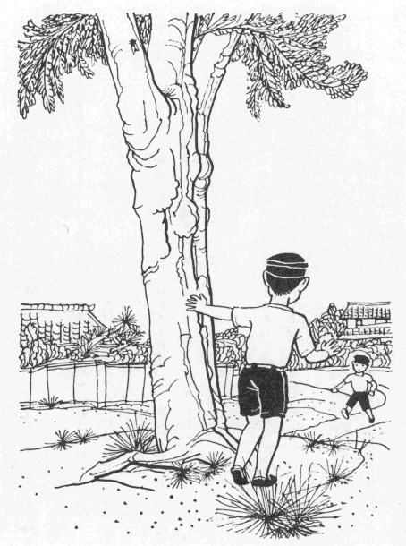

Ｂ坊が、だれかにいじめられて、
路の
上で
泣いていました。
「どうしたの？」と、わけをきくと、こうなのであります。
Ａ坊と、
Ｂ坊は、いっしょに
遊んでいたのです。すると、みんみんぜみが
飛んできて、
頭の
上の
枝に
止まりました。
二人は、
家に
走っていって、もち
棒を
持ってこようとしました。すると、
日ごろから、
強い、わんぱく
子の
Ａ坊が、
「これは、
僕のせみだから
逃がしちゃいけないよ。
番をしていておくれ。」と、
命ずるように、
Ｂ坊に
向かっていいました。

清水良雄・
絵［＃「清水良雄・絵」はキャプション］
気の
弱い
Ｂ坊は、たとえ
内心では、それを
無理と
感じても、だまって、うなずくよりほかはなかったのです。
「どうか、
Ａちゃんのくるまで、みんみんぜみが、
逃げてくれなければいいが……。」と、
Ｂ坊は、
心配していました。なぜなら、もし、せみが、
逃げたら、きっと
Ａ坊は、
自分のせいにすると
思ったから。
Ｂ坊は、
上を
向いて、せみを
見守りながら、
身動きもせず、じっとしていました。せみは、つづけて、ミン、ミン、ミン――と
鳴きました。そして、
鳴きやむと、
思い
出したように、
遠方を
目がけて、
飛び
去ってしまいました。うらめしそうに、
Ｂ坊は、しばらく、
飛び
去ってしまったせみの
行方を
見守っていました。
そのとき、もち
棒を
持った
Ａ坊が、
息をきらしながら、あちらから
駆けてきました。
「
Ｂちゃん、せみはいる？」と、
遠くから、こちらを
見て
叫びました。
Ｂ坊は、なんとなく、すまなそうな
顔つきをして、
頭をふり、
「
逃げてしまった。」と、
答えました。
「うそだ！
君が、
逃がしたのだろう……。」と、
Ａ坊は、すぐ、そばにくると
難題をいいかけました。
「
僕が、
逃がしたのではないよ。」と、
Ｂ坊は、あまりの
Ａ坊の
邪推に、
不平を
抱きました。
「
君は、
番をしているといったじゃないか？」
Ｂ坊は、たしかにそういったから、だまっていました。
「
君は、
番をしているといったろう。このうそつき！」
こういって、
Ａ坊は、
Ｂ坊をなぐったのです。
――
話はこういうのでした。さあ、どちらに
真理がありましょう？
「ねえ、
叔父さん、
上野へまいりましょう。」と、
学生がいいました。
もう、
秋で、
上野の
山には、いろいろの
展覧会がありました。
「そうだな、
天気がいいから、いってみようか。」
二人は、
家を
出かけました。そして、
電車を
降りて、
石段を
上がり、
桜の
木の
下を
歩いて、
動物園の
方へきかかりました。いつしか
桜の
葉は
黄ばみかかって、なかに、
虫ばんでいるのもあれば、
風もないのに、
力なく
落ちるのもありました。
「おまえは、
光琳の
絵を
見たことがあるか。」と、
叔父さんは、
甥にききました。
「よく、
絵画雑誌に
載っている、
写真版で
見たことがあります。」
「
写真版では、うまみがよくわからんが、
気品があるだろう……。」と、
叔父さんがいわれた。
「なかなか、
豪華でいいと
思います。」と、
学生は
答えました。
「そう、
豪華じゃ。」
二人は、
博物館の
前の
通りを
歩いていました。
「おまえは、どこへゆくつもりじゃ。」と、
叔父さんは、
立ち
止まってきかれました。
学生は、
美術館に、いま
開かれている
洋画の
展覧会を
見たいと
思ったのです。
「
博物館に、いま
光琳・
抱一など、
琳派の
陳列があるのじゃがな。」と、
叔父さんは、
博物館の
門のある
方をつえで
指しました。しかし、その
方には、
人影が
少なくて、
寂しかったのです。そして、
青年や
若い
女たちは、うららかな
秋の
日の
光を
浴びながら、
旗の
立っている
美術館の
方へと、あとからあとから、つづいたのでした。
「
僕は
洋画を
見たいのですが、
叔父さんもごらんなさいませんか。」と、
学生は、いいました。
「なるほど、みんな、そっちへばっかりゆくのう、どんな
傑作があるのか、おまえのおつきあいをしてみようか。」
叔父さんは、
博物館の
方を
名残惜しそうに、もう一
度見返ったが、つい
甥の
後からついて
美術館の
入り
口をはいってゆきました。
帰る
時分になって、
叔父さんは、
思いました。――
西洋画なんて、どこがおもしろいのだろう？ そして、
博物館にいい
陳列があるのに、
見にゆかずに、こちらへばかりやってくる――。
「
高い
金を
出して
見るだけのこともないじゃないか。」と、
叔父さんはいいました。
「
叔父さん、
昔の
絵は、いくらよくたって、
冷たい
墓石のようなものです。いまの
若い
人の
画には、
自分たちと
同じ
血が
通っています。まあ、
自分の
姿を
見にゆくのですね。」
「すると、おもしろくないのは、もう
自分の
姿がどこにも
見いだせないというわけかな。そう
考えれば、さびしい
気がするのう。」
頭の
白くなった、
人のよい
叔父さんは、ほんとうに、さびしそうに
笑いました。
達者のうちは、せっせと
働いてやっとその
日を
暮らし、
病気になってからは、
食うや
食わずにいて、ついに、のたれ
死にをしたあわれな
男がありました。その
死骸は
犬ころの
屍と
同じく、
草深い、
野原のすみにうずめられてしまった。そして、その
人の一
生は、
終わってしまったのであるが、
彼の
霊魂だけは、どうしても
浮かばれなかったのです。
「
文明だという、にぎやかな
世の
中へ
生まれ
出て、いったいどんなしあわせを
受けたろう？
生きている
間は、
世の
中のために
仕事をした。
死んでも
形だけの
葬式ひとつしてもらえなかった……これでは、
犬やねこと
同じであって、
冥土の
門もくぐれないではないか？」
霊魂は、まったく
浮かばれなかったのです。りっぱなお
寺へいって、お
経をあげてもらい、
丁寧に
葬いをしてもらってから、
冥土の
旅につこうと
思いました。
うす
曇った、
風の
寒い
日の
午後のこと、この
貧乏人の
霊魂は、
☆棺屋の
前をうろついていました。
「だれか、
冥土の
途づれにするものはないかな。」と、
人間を
物色していたのです。
ここに、
金持ちの
老人がありました。
何不足なく
暮らしていました。ただ、もっと
見たい、もっと
知りたい、もっと
味わいたいという
欲望は、かずかぎりなくあったが、だんだん
体力の
衰えるのをどうすることもできませんでした。
寒い
風の
吹く
中を、この
老人は
歩いてきました。
棺屋の
前にさしかかって、ふと、その
店先にあった
棺や、
花輪が
目に
触れると、
「あの
中へ、だれかはいるのだろうが、このおれも、いつか一
度は、はいらなければならぬ。ああ、そんなことを
思っても、
気が
滅入ってくる……。」と、
頭を
振って、
通り
過ぎようとしました。
これを
見た
霊魂は、
冷たい
青い
笑いをしました。そして、
金持ちの
背中へ、そっと、しがみつきました。
「おお
寒い！ かぜをひいたかな。」
金持ちの
老人は、
思わず
身ぶるいをして、
家へ
急ぎました。
それから、
十日ばかりたつと、
金持ちは、かぜがもとで
死んだのであります。
生きている
間は、
自動車に、
乗ったことのない
貧しい
男の
霊魂は、いま
金色の
自動車に
乗せられて、
冥土の
旅をつづけました。また、ありがたいお
経によって、すべての
妄念から
洗い
浄められた。
金持ちの
霊魂は、
平等・
無差別の
生まれる
前に
立ち
返って、二つの
魂は
仲よくうちとけていました。
「こうして
途づれがあれば、十
万億土の
旅も、さびしいことはない。」と、
金持ちの
霊魂がいえば、
「なぜ、
娑婆にいるうちから、こうして、お
友だちにならなかったものか……。」と、
貧乏人の
霊魂は、いぶかしく
感じました。
あちらの
空には、ちぎれ、ちぎれの
雲が
飛んで、
青い
水色の
山が、
地平線から、
顔を
出して
微笑しています。
秋雨の
降った
後の
野原は、
草も
木も
色づいて、
鳥の
声もきこえませんでした。
金色にかがやく、
棺を
載せた
自動車は、ぬかるみの
道をいくたびか、
右と
左におどりながら、
火葬場の
方へと
走ったのです。
☆
棺屋――
葬儀社